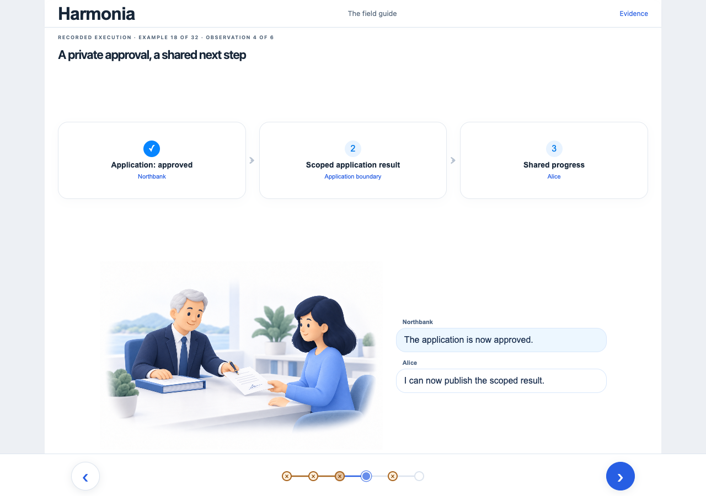
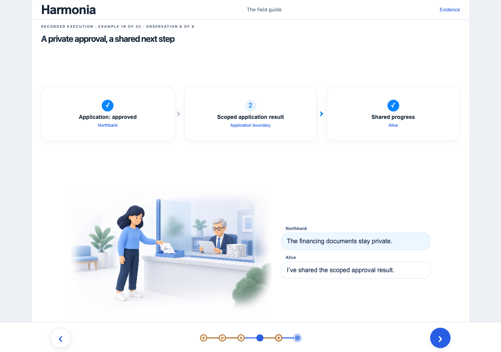
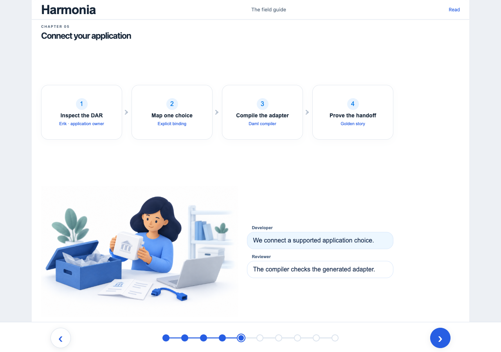
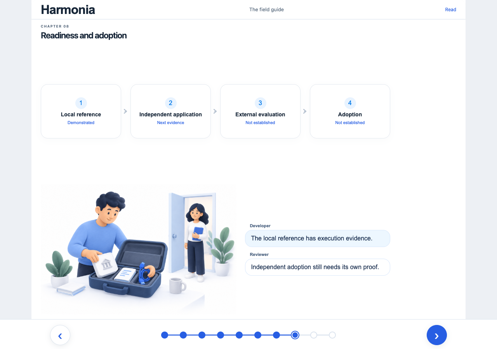
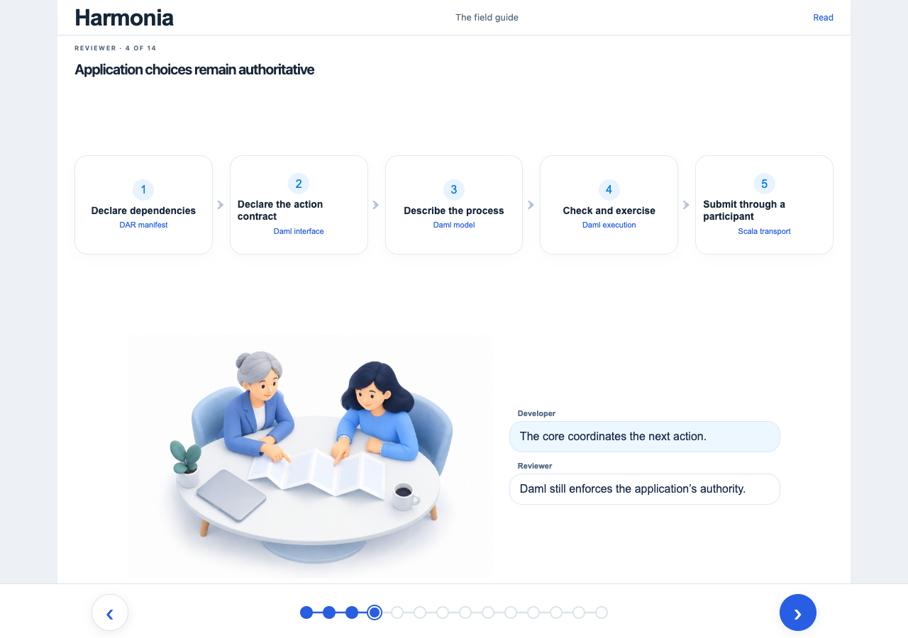
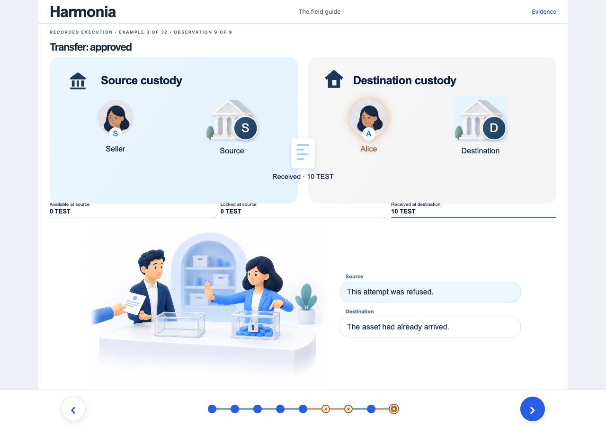
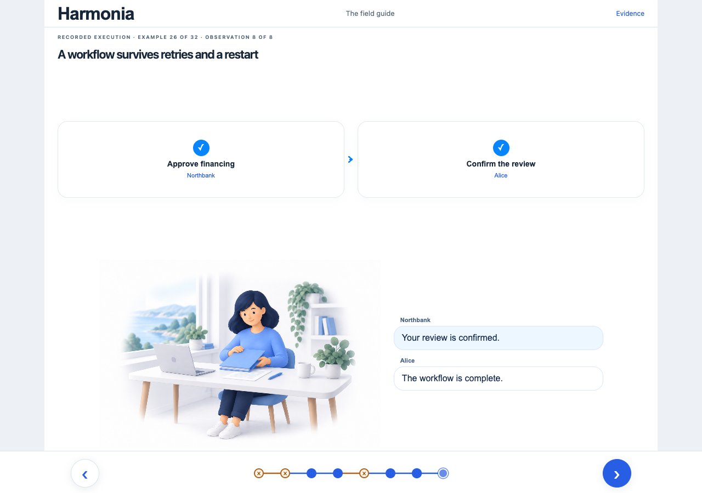
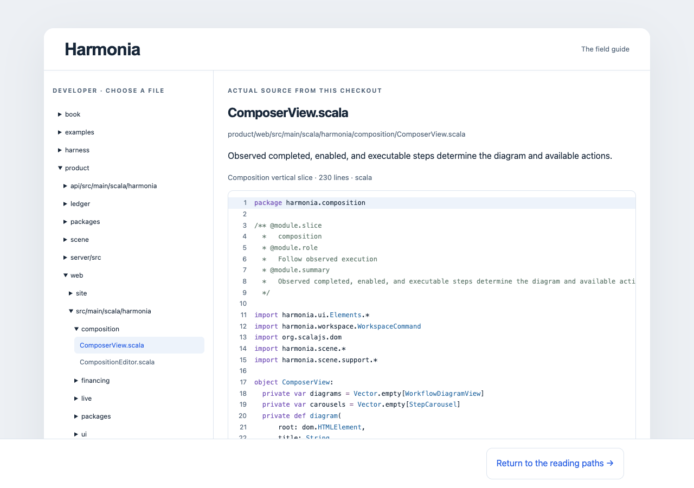
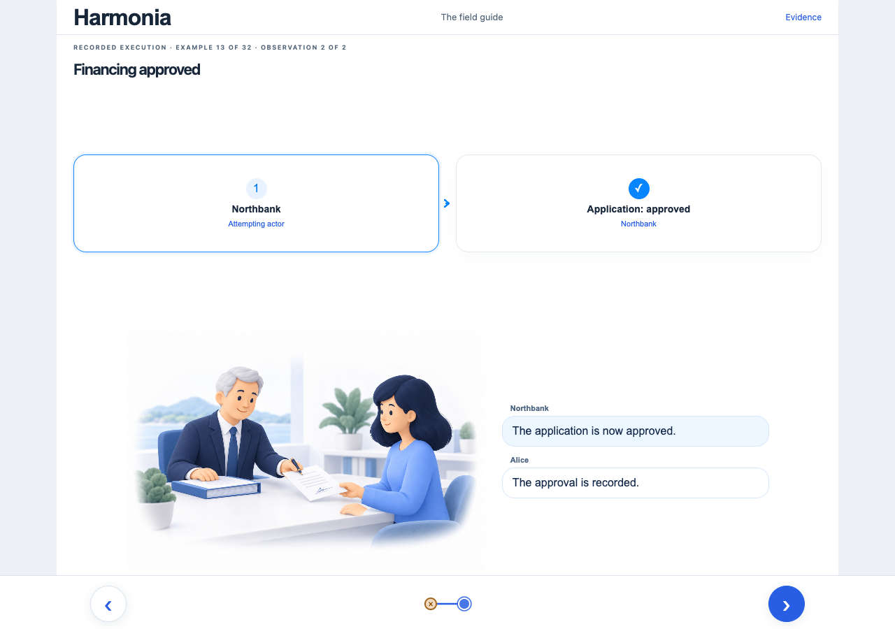

Start with Alice's goal

The existing bank-to-property infographic: Alice, Northbank, Ben and Sofia, each with a clear role.
Sources: purchase · proposal
Keep the approved UI. Organize the content around the question each reader brings.
All twelve page summaries and their selected references are unfolded here. Read each region left to right.
What does this let me do?
Alice wants to make a property proposal with her bank's approval.
The existing bank-to-property infographic: Alice, Northbank, Ben and Sofia, each with a clear role.
Sources: purchase · proposal


Northbank approves → Alice proposes → Ben relays → Sofia receives. Each stop shows its consequence below the stable infographic.
Sources: purchase

The same purchase has two explicit endings in its carousel: proposal received, or financing declined and the proposal blocked.
Sources: purchase · purchase-declined
This region ends here. I understand the journey and can recognize its outcome.
Why does this work, and what is proven?
A technical evaluator wants the mechanism behind the product promise.


Northbank's authorized Daml choice, separate participant views, and the scoped result that permits Alice to continue.
Sources: private-approval · ledger-choice · proposal

Two supported paths into the same workflow core: implement its interface, or compile an adapter for an eligible existing DAR.
Sources: adapter · packages · claims

Local workflow evidence beside the remaining product questions: broader integration, independent adoption and release readiness.
Sources: claims · proposal
This region ends here. I can explain the mechanism, the demonstrated scope and the remaining risks.
How is the system designed?
A reviewer wants to test whether the design satisfies the original intent.

A diagram of browser, off-ledger Scala service, bindings, on-ledger Daml core and application contracts; show ownership and participant boundaries.
Sources: architecture-original · proposal · feature · core · ledger-choice
Request → typed service → ledger choice → observed state. A refused action stays visibly refused along that same route.
Sources: screen · feature · ledger-choice · observation · private-approval


Three focused diagram stops: a refused authority bypass, an eligible atomic settlement, and progress recovered after reconnection. Pair each with its original claim and evidence.
Sources: private-approval · transfer · resume · claims · proposal
This region ends here. I can identify boundaries, trace execution and challenge a claim with evidence.
Where do I read and verify the code?
A senior developer wants one understandable route through a real feature.

The existing file tree and colored source view, with a concise explanation of the financing slice and its place in the repository.
Sources: feature · screen · core
/** Maps a supported financing operation to its actual application choice. */object Financing: def select( action: FinancingAction, snapshot: FinancingObservation ): Option[LedgerExercise] = action match case FinancingAction.Approve => snapshot.application.map(application => LedgerExercise(application.contract, "Approve", LiveLedger.emptyArgument) ) case FinancingAction.Continue => snapshot.progress.map(progress => LedgerExercise(progress.contract, "Continue", LiveLedger.continuation(snapshot.proof)) ) choice Approve : ContractId Application controller bank do assertMsg "Application must be pending" (status == "pending") create this with status = "approved"The financing screen, shared API, Scala service, Daml choice and observation code, with purpose annotations beside the real source.
Sources: screen · api · feature · ledger-choice · observation

actions: - id: buyer-attempt outcome: rejected reason: unauthorized application: pending consumed: false active_contracts: 1 visible_to: [Alice, Northbank] - id: bank-approval outcome: committed application: approved consumed: true active_contracts: 1 visible_to: [Alice, Northbank]Input → execution → actual result beside the committed expectation; connect the result to the same recorded infographic.
Sources: golden · feature
This region ends here. I know where to read, what owns each behavior and how it is verified.